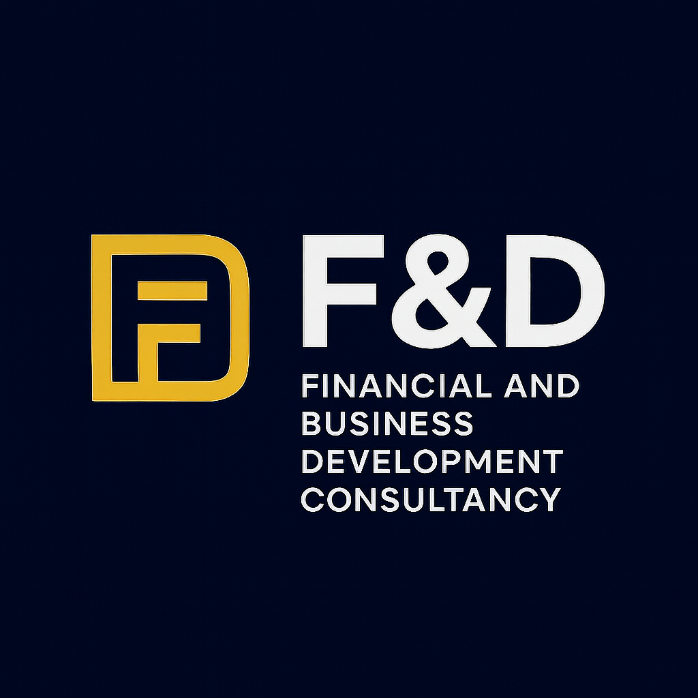
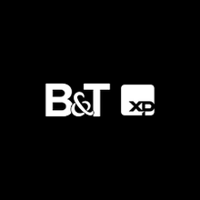
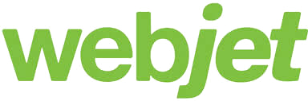
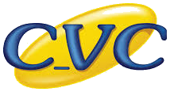
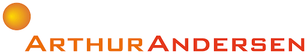

Rio de Janeiro, Brasil
F&D Financial and Business Development Consultancy
Co-fundador de uma consultoria voltada a empresas que precisam estruturar crescimento, elevar o nível de gestão e tomar decisões estratégicas com maior segurança financeira. A F&D reúne experiência em finanças, auditoria, estratégia, relações internacionais e desenvolvimento de negócios.
- Estruturação de projetos de M&A, valuation, avaliação econômico-financeira e suporte a processos de investimento.
- Desenvolvimento de planejamento orçamentário, modelos financeiros, controles gerenciais, auditoria e compliance.
- Apoio a empresas em expansão, reorganização de processos, criação de indicadores e melhoria da qualidade das informações para decisão.
- Desenvolvimento de negócios, estratégias de expansão nacional e internacional, relações institucionais e intermediação de oportunidades.
- Atuação próxima aos sócios e gestores, transformando diagnósticos em planos de ação práticos e adaptados à realidade de cada negócio.

10 anos e 9 meses
Rio de Janeiro, Brasil
B&T Corretora de Câmbio
Atuação de longo prazo na transformação da estrutura financeira e gerencial da companhia, acompanhando uma fase de crescimento expressivo, diversificação do negócio e preparação para um padrão de gestão mais próximo ao de uma instituição bancária.
- Crescimento: contribuí para a evolução do faturamento de aproximadamente R$ 30 milhões para R$ 90 milhões, apoiando decisões de expansão, investimentos e novas frentes de receita.
- Estruturação: construí as áreas Financeira, Administrativa e de FP&A, ampliando a equipe de 5 para mais de 25 profissionais e criando uma célula dedicada de planejamento.
- Gestão e governança: implantei orçamento, forecast, controle de custos, reporting executivo, BI, dashboards e KPIs, fortalecendo a cultura de decisão orientada por dados.
- Novos negócios: desenvolvi planos de negócio e estudos de viabilidade para Zro.Bank, Bitblue e IZZI Remessas; a Zro captou mais de R$ 20 milhões em rodadas de investimento.
- M&A: liderei os processos de aquisição da Europa e da Espaço Câmbio, atuando em valuation, modelagem, due diligence e integração. As operações viabilizaram a entrada no varejo B2C, com mais de 25 lojas e participação de aproximadamente 70% da receita da B&T à época.
- Transformação institucional: participei do projeto de evolução da B&T para Banco de Câmbio, com estudos financeiros e regulatórios e interface direta com o BACEN.
- Pessoas e cultura: estruturei PPR/PLR e participei da modernização dos escritórios, promovendo maior integração entre equipes e áreas.
- Preparação para exit: apoiei a companhia na adoção de práticas compatíveis com padrão bancário e em sua preparação para movimentos estratégicos posteriores.
1 ano
Galeazzi & Associados
Atuação em projetos de turnaround e reestruturação de empresas em deterioração financeira, recuperação judicial ou necessidade de reorganização gerencial. O trabalho exigia diagnóstico rápido, priorização de caixa, recuperação de controles e participação direta na execução das mudanças.
- Condução e participação em projetos de melhoria de desempenho e reestruturação empresarial.
- Atuação nas frentes financeira, administrativa, contábil e de controladoria, com foco em estabilização e recuperação de performance.
- Apoio à alta administração na definição de prioridades, organização de informações e implantação de novos mecanismos de gestão.
- Experiência em contextos de alta pressão, restrição financeira e necessidade de resultados em curto prazo.
Controller Interino pela Galeazzi
VIPAL
Assumi interinamente a Controladoria durante o projeto de reestruturação conduzido pela Galeazzi, combinando continuidade operacional, recuperação de controles e apoio à agenda de eficiência financeira.
- Rentabilidade: implementação de medidas de controle de custos e revisão de margens que contribuíram para incremento de aproximadamente 1,5% a 2,0% no EBITDA durante o período.
- Caixa e dívida: apoio à estratégia de desalavancagem por meio de maior disciplina de fluxo de caixa e gestão do capital de giro.
- Governança: alinhamento das práticas contábeis e gerenciais às novas diretrizes de eficiência e controle.
- Gestão por indicadores: estruturação de dashboards financeiros e operacionais para acompanhamento da alta administração.
- Preparação de longo prazo: fortalecimento dos fundamentos econômico-financeiros que posteriormente contribuíram para a preparação da companhia para abertura de capital.

1 ano
Webjet Linhas Aéreas
Participação na organização administrativa e financeira da companhia em um período de preparação para movimentos estratégicos relevantes.
- Controles internos: implantação do departamento do zero, com criação de políticas, processos, rotinas de compliance e mecanismos de governança.
- Confiabilidade financeira: fortalecimento da qualidade das informações e dos controles utilizados na gestão de riscos e na tomada de decisão.
- Mercado de capitais: participação na preparação da companhia para uma potencial abertura de capital, posteriormente não realizada.
- Transação estratégica: participação no processo que culminou na venda da Webjet para a GOL, em operação avaliada em aproximadamente R$ 500 milhões.
Participação anterior no projeto Set Travel, plataforma digital de turismo ligada ao ambiente da GP7/CVC e posteriormente incorporada à Webjet como Webjet Viagens.

2 anos
São Paulo, Brasil
CVC / Publicis Red Lion (ex-GP7)
Responsável por elevar o nível de estrutura financeira e de governança de uma operação que se preparava para uma transação estratégica.
- Estruturação financeira: implantação da contabilidade interna e organização dos controles financeiros, rotinas, demonstrativos e processos gerenciais.
- Governança: implementação de auditoria externa independente, aumentando transparência, confiabilidade e padrão de compliance.
- Preparação para venda: suporte à organização financeira e documental da empresa no processo que culminou na aquisição da GP7 pela Publicis.
1 ano
Brasil Brokers
Atuação na construção da infraestrutura financeira e de governança necessária para consolidar 20 imobiliárias familiares em uma companhia nacional e prepará-la para o mercado de capitais.
- Roll-up e integração: liderança na consolidação de 20 empresas com estruturas, processos e práticas contábeis distintas.
- IPO: preparação das demonstrações financeiras, controles e mecanismos de governança necessários à abertura de capital.
- ERP: implantação do SAP Business One nas unidades de negócio, aumentando padronização e integridade da informação.
- Harmonização contábil: unificação de planos de contas e práticas de reporte para viabilizar consolidação e auditoria.
- Regulação: atendimento às exigências da CVM e suporte à conformidade necessária à listagem.
1 ano
São Paulo, Brasil
Lopes Consultoria de Imóveis
Participação na transformação de uma empresa de gestão familiar em uma companhia preparada para o mercado de capitais, em um período de forte crescimento do setor imobiliário.
- IPO: atuação direta no ciclo de preparação para abertura de capital e na interface com a auditoria externa Deloitte.
- Crescimento: suporte financeiro e gerencial em uma fase na qual o faturamento evoluiu de aproximadamente R$ 40 milhões para R$ 100 milhões.
- Estrutura corporativa: implantação das áreas de Controladoria, Contabilidade e Fiscal, criando uma base compatível com uma empresa de capital aberto.
- Governança e CVM: atendimento às exigências regulatórias e fortalecimento dos processos de reporte e conformidade.

7 anos
São Paulo, Brasil
Deloitte Brasil / Arthur Andersen
Base técnica da carreira construída em duas das principais firmas globais de auditoria, com exposição precoce a grandes empresas, ambientes regulados, controles complexos e padrões elevados de qualidade financeira.
- Treinamento em Chicago com foco em contabilidade e auditoria.
- Formação prática intensiva em demonstrações financeiras, controles internos, auditoria e análise de riscos.
- Setor bancário: trabalhos para o Banco Santander durante sua expansão no Brasil e aquisição do Banespa.
- Setor aéreo: atuação em Varig, incluindo o período de avaliação de continuidade operacional.
- Bens de consumo: experiência com Procter & Gamble (P&G) e Unilever, entre outras companhias de grande porte.